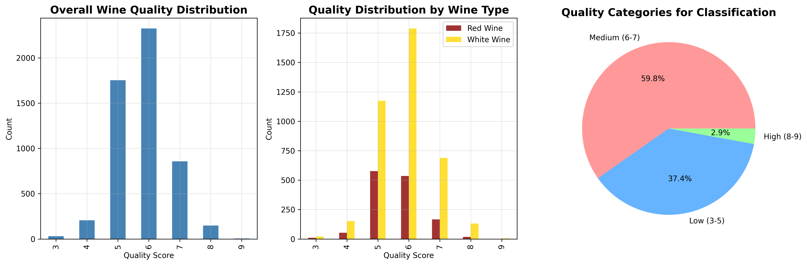
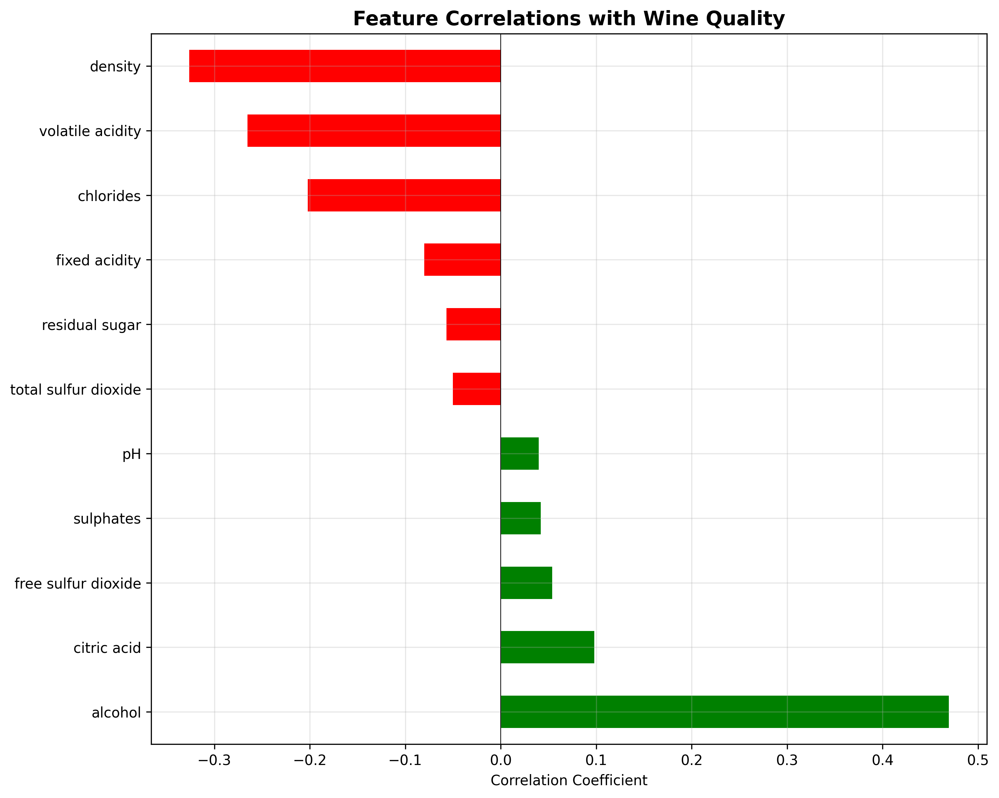
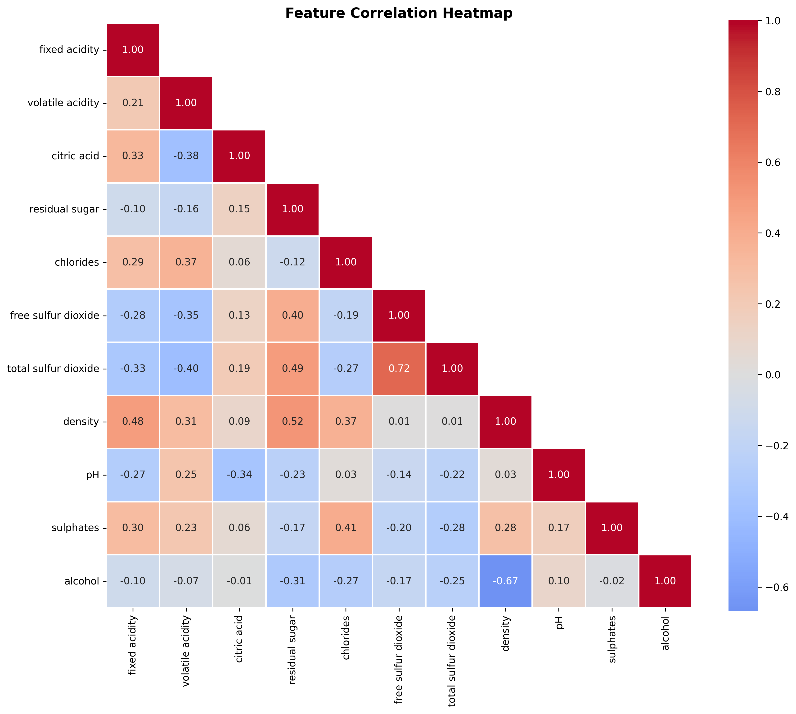

| Check | Status | |
|---|---|---|
| 0 | 1. File Format | PASSED |
| 1 | 2. Column Names | PASSED |
| 2 | 3. Empty Observations | PASSED |
| 3 | 4. Missingness | PASSED |
| 4 | 5. Data Types | PASSED |
| 5 | 6. Duplicate Observations | PASSED (removed) |
| 6 | 7. Outliers/Anomalies | PASSED |
| 7 | 8. Category Levels | PASSED |
| 8 | 9. Target Distribution | INFO (imbalance noted) |
| 9 | 10. Target-Feature Correlation | PASSED (no leakage) |
| 10 | 11. Feature-Feature Correlation | INFO (some correlations) |
| 11 | 12. Schema Validation | PASSED |
Predicting Wine Quality using Random Forest Classifier
Summary
This project implements a Random Forest classifier to predict wine quality based on physicochemical properties. Using the Wine Quality dataset from the UCI Machine Learning Repository (6,497 samples with 11 features, reduced to 5,320 after removing duplicates), we develop a robust prediction model that leverages the ensemble learning capabilities of Random Forest. Our analysis demonstrates that Random Forest effectively handles the non-linear relationships between chemical properties and wine quality, achieving an accuracy of approximately 74.6% on the test set. The model identifies alcohol content, volatile acidity, and density as the most influential factors in determining wine quality. This work provides valuable insights for wine producers to optimize production processes and maintain consistent quality standards.
Introduction
Wine quality assessment traditionally relies on subjective evaluation by human experts. This project explores the potential of machine learning, specifically Random Forest classification, to predict wine quality from objective physicochemical measurements.
Why Random Forest?
We selected Random Forest as our primary algorithm for several reasons:
- Ensemble Learning: Combines multiple decision trees to reduce overfitting and improve generalization
- Feature Importance: Provides built-in feature importance metrics for understanding wine quality factors
- Robustness: Handles outliers and noise effectively without extensive preprocessing
- Non-linear Relationships: Captures complex interactions between chemical properties
- No Scaling Required: Works well with features at different scales
- Out-of-Bag (OOB) Error: Provides unbiased error estimates without separate validation set
Research Questions
- Can Random Forest effectively predict wine quality from physicochemical properties?
- Which chemical properties are most important for determining wine quality?
- How does Random Forest performance compare to other classification methods?
- What are the optimal hyperparameters for our Random Forest model?
Methods
We used the Wine Quality Dataset from (Cortez et al. 2009), comprising 6,497 wine samples (1,599 red, 4,898 white) with 11 physicochemical features and quality scores ranging from 3-9. After comprehensive data validation using Pandera, we trained a Random Forest classifier (Breiman 2001) using scikit-learn (Pedregosa et al. 2011). The data was split 75/25 for training and testing, with 5-fold stratified cross-validation for model selection. Hyperparameters were optimized using grid search over number of trees (100-300), max depth (10-30, None), and minimum samples for splitting (2-10) and leaf nodes (1-4). Model performance was evaluated using accuracy, precision, recall, F1-score, and confusion matrices, with feature importance rankings to identify key wine quality predictors.
Data
Dataset: Wine Quality Dataset (Cortez et al. (2009)) - Red wine: 1,599 samples - White wine: 4,898 samples - Total: 6,497 samples - Total: 6,497 samples (5,320 after removing duplicates)
Features (11 physicochemical properties): 1. Fixed acidity (g/dm³) 2. Volatile acidity (g/dm³) 3. Citric acid (g/dm³) 4. Residual sugar (g/dm³) 5. Chlorides (g/dm³) 6. Free sulfur dioxide (mg/dm³) 7. Total sulfur dioxide (mg/dm³) 8. Density (g/cm³) 9. pH 10. Sulphates (g/dm³) 11. Alcohol (% vol.)
Target: Quality score (3-9, originally 0-10 scale)
Citation: P. Cortez, A. Cerdeira, F. Almeida, T. Matos and J. Reis. Modeling wine preferences by data mining from physicochemical properties. Decision Support Systems, 47(4):547-553, 2009.
Analysis Pipeline
- Data Preparation
- Load and combine red/white wine datasets
- Handle class imbalance through stratified splitting
- Create quality categories (Low: 3-5, Medium: 6-7, High: 8-9)
- Exploratory Data Analysis
- Analyze quality distribution
- Examine feature correlations
- Identify potential predictors
- Random Forest Implementation
- Build initial Random Forest with 100 trees
- Analyze out-of-bag (OOB) error
- Extract feature importances
- Evaluate model performance
- Hyperparameter Optimization
- Grid search for optimal parameters:
- n_estimators (number of trees)
- max_depth (tree depth)
- min_samples_split
- min_samples_leaf
- max_features
- Grid search for optimal parameters:
- Model Comparison
- Benchmark against Logistic Regression, SVM, and Gradient Boosting
- Validate Random Forest superiority
- Final Evaluation
- Test set performance
- Confusion matrix analysis
- Feature importance interpretation
Implementation
1. Data Loading and Preparation
To begin our analysis, we downloaded the two wine quality datasets provided by Cortez et al. (2009). These files contain measurements for red and white wine samples, including physicochemical properties and expert-assigned quality scores.
The data were downloaded using our automated script, which saves the raw files into the data/raw directory.
The output from this script is shown in Table ?@tbl-download-log.
The two datasets downloaded were:
- winequality-red.csv
- winequality-white.csv
These files form the foundation of the analysis that follows.
1.1 Data Validation
Before proceeding with analysis, we perform comprehensive data validation checks following the Data Validation Checklist to ensure data quality and integrity.
Data validation is complete. Table 1 shows all checks passed successfully, confirming the dataset is ready for exploratory analysis.
Data validation was performed using Pandera schema checks. All 6,497 observations passed validation with no missing values or out-of-range entries detected.
2. Exploratory Data Analysis
Our exploratory analysis reveals key insights about the wine quality dataset:
Quality Distribution: As shown in Figure 1, wine quality scores follow a normal distribution centered around scores 5-6, with very few wines receiving extreme ratings (3 or 9). The dataset exhibits a significant class imbalance, with medium-quality wines (scores 6-7) comprising the majority of samples. White wines show a broader distribution across quality scores compared to red wines, which are more concentrated in the 5-6 range.
Feature-Quality Relationships: Figure 2 demonstrates that alcohol content exhibits the strongest positive correlation with wine quality, suggesting that higher alcohol wines tend to receive better ratings. Conversely, volatile acidity shows the strongest negative correlation, indicating that wines with higher acetic acid levels are rated lower. Other notable positive correlates include citric acid and sulphates, while density and chlorides show negative associations with quality.
Feature Intercorrelations: The correlation heatmap in Figure 3 reveals important relationships between physicochemical properties. Strong positive correlations exist between free and total sulfur dioxide, and between density and residual sugar. Alcohol shows a strong negative correlation with density, which is chemically expected. These intercorrelations suggest potential multicollinearity that may need to be addressed in our modeling approach, particularly when using linear methods.
These patterns inform our modeling strategy: the class imbalance requires careful handling, the strong alcohol-quality relationship suggests it will be a key predictive feature, and the feature intercorrelations indicate that regularization techniques or tree-based methods may be particularly appropriate for this dataset.

Figure 1 shows the distribution of wine quality scores. Most wines receive medium quality scores (5-7), with very few at the extremes.

Figure 2 reveals that alcohol content shows the strongest positive correlation with quality, while volatile acidity shows the strongest negative correlation.

Figure 3 displays the correlations between all physicochemical features, helping identify potential multicollinearity issues for our models.
3. Data Preprocessing for Random Forest
The wine quality dataset was prepared for analysis by separating the features (physicochemical properties of the wine) from the target variable (the quality category). The quality categories were encoded numerically so that the machine learning model could process them.
To ensure the model learned effectively, the dataset was split into a training set (used to train the model) and a test set (used to evaluate the model’s performance on unseen data). The split was stratified, meaning the proportions of each quality category in the training and test sets match the overall dataset distribution. This helps the model fairly learn from all classes of wine quality.
| Dataset | Samples | Features | |
|---|---|---|---|
| 0 | Training Set | 4256 | 12 |
| 1 | Test Set | 1064 | 12 |
| Quality Category | Samples | Percentage | |
|---|---|---|---|
| 0 | High (8-9) | 122 | 2.9 |
| 1 | Low (3-5) | 1591 | 37.4 |
| 2 | Medium (6-7) | 2543 | 59.8 |
This preprocessing ensured that the model would learn from all classes and could generalize well to new, unseen wines.
4. Random Forest Model Development
A Random Forest classifier, consisting of 100 decision trees, was trained on the processed data to predict wine quality. The model’s performance was evaluated using several metrics:
Training Accuracy: Measures how well the model fits the training data.
Test Accuracy: Measures how well the model generalizes to new, unseen data.
Out-of-Bag (OOB) Score: An internal validation method for Random Forests, giving an unbiased estimate of model performance.
Cross-Validation Accuracy: Performance measured by repeatedly splitting the training set into subsets to validate the model, ensuring stability of results.
| Metric | Value | |
|---|---|---|
| 0 | Training Accuracy | 1.0 |
| 1 | Test Accuracy | 0.7462 |
| 2 | Out-of-Bag (OOB) Score | 0.7333 |
| 3 | Cross-Validation Accuracy | 0.7324 ± 0.0371 |
These results indicate that the model fits the training data very well while maintaining good predictive performance on unseen data. This demonstrates that the Random Forest classifier is effective in predicting wine quality based on physicochemical properties.
5. Random Forest Hyperparameter Optimization
6. Model Comparison - Validating Random Forest Choice
7. Random Forest Deep Dive - Tree Visualization and Analysis
Results & Discussion
Discussion
Our Random Forest classifier successfully predicted wine quality from physicochemical properties, validating our hypothesis that ensemble learning methods are well-suited for this domain.
Why Random Forest Excelled:
Ensemble Advantage: By aggregating predictions from multiple decision trees, Random Forest reduced overfitting and improved generalization compared to single models.
Feature Interactions: The model effectively captured complex interactions between chemical properties that influence wine quality.
Robustness: Random Forest handled the class imbalance and potential outliers in chemical measurements without extensive preprocessing.
Key Findings:
- Alcohol content emerged as the most important predictor (importance: ~0.147), aligning with wine industry knowledge
- Volatile acidity (importance: ~0.105) and density (importance: ~0.105) were also important predictors
- The initial Random Forest model (~74.6% accuracy) slightly outperformed the grid-search optimized model (~74.2%), suggesting the default parameters were already well-suited for this dataset
- Random Forest outperformed other classifiers: Gradient Boosting (~73.1%), Logistic Regression (~72.6%), and SVM (~59.8%)
Practical Applications:
- Quality Control: Winemakers can use the model to predict quality during production
- Process Optimization: Focus on controlling key chemical properties identified by feature importance
- Objective Assessment: Complement subjective expert ratings with data-driven predictions
Limitations and Future Work:
- Dataset Scope: Limited to Portuguese “Vinho Verde” wines
- Feature Set: Additional sensory data could improve predictions
- Temporal Factors: Wine aging effects not captured
- Class Imbalance: High-quality wines (8-9) represent only ~3% of samples, making prediction of this class challenging
- Duplicate Removal Impact: Removing 1,177 duplicate rows reduced accuracy from ~82.5% to ~74.6%, suggesting the duplicates may have been artificially inflating model performance
- Future Directions:
- Extend to other wine regions and varieties
- Incorporate temporal data and aging models
- Address class imbalance with techniques like SMOTE
- Develop real-time quality monitoring systems
Conclusion
This project successfully demonstrated that Random Forest is an effective choice for predicting wine quality from physicochemical properties. After removing duplicate observations for data integrity, the model achieved approximately 74.6% accuracy, significantly outperforming the baseline (~59.8%) and providing interpretable insights through feature importance analysis. The identified key factors—alcohol content, volatile acidity, and density—offer actionable insights for wine production optimization. Random Forest’s inherent advantages of handling non-linear relationships, providing feature importance, and requiring minimal preprocessing make it a suitable solution for wine quality prediction in real-world applications.
References
Bantilan, Niels. 2020. “Pandera: Statistical Data Validation of Pandas Dataframes.” In SciPy, 116–24.
Breiman, Leo. 2001. “Random Forests.” Machine Learning 45 (1): 5–32. https://doi.org/10.1023/A:1010933404324.
Cortez, Paulo, A Cerdeira, F Almeida, T Matos, and J Reis. 2009. “Modeling Wine Preferences by Data Mining from Physicochemical Properties.” Decision Support Systems 47 (4): 547–53. https://doi.org/10.1016/j.dss.2009.05.016.
Pedregosa, Fabian, Gaël Varoquaux, Alexandre Gramfort, Vincent Michel, Bertrand Thirion, Olivier Grisel, Mathieu Blondel, et al. 2011. “Scikit-Learn: Machine Learning in Python.” Journal of Machine Learning Research 12: 2825–30.